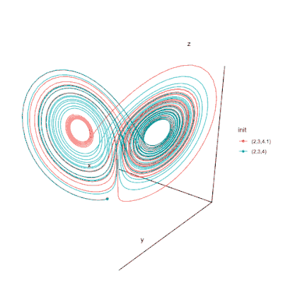

body {
background-color: silver;
}
a {
color: blue;
text-decoration: none
}
a:hover{
color: snow;
text-decoration: none;
}
a:visited{
color:none ;
}
em{color:brown;}
.img1 {
display: block;
margin-left: auto;
margin-right: auto;
}
p {
color: whitesmoke;
}
#overlay {
position: fixed;
display: none;
width: 100%;
height: 100%;
top: 0;
left: 0;
right: 0;
bottom: 0;
background-color: none;
z-index: 2;
cursor: pointer;
}
#text{
position: absolute;
top: 50%;
left: 50%;
font-size: 50px;
color: white;
transform: translate(-50%,-50%);
-ms-transform: translate(-50%,-50%);
}
Overlay Text
This is a page to sharpen your minds!
You can find riddles as well as paradoxes!
Just click on the links you will find below and get ready for head scratching.
First we give an easy quiz question as a warmup:
Which football player has scored 86 goals in the Premier League Champion and another 39 with his National team?
Riddle section
Riddle 1
Riddle 2
Paradoxes section
Paradox 1
Moreover,here you can find some weird facts that have actually occured!
Somebody who never lived
In other interesting facts:
Have you ever heard of the "butterfly effect"?

Take a closer look at the moving particle!
Is chaotic behaviour an undeterministic behaviour?
A more insightful look.